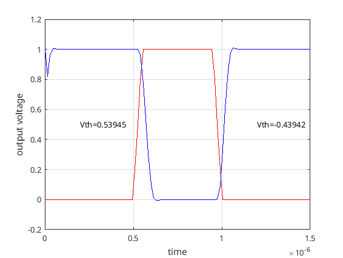

Polynomial chaos is an expansion method for approximating sample paths of stochastic processes. In a polynomial chaos expansion, a complicated stochastic process is represented with a weighted linear combination of orthogonal polynomials (Legendre, Laguerre etc.) and standard random variables (uniform, Gaussian etc.).
Polynomial chaos lends itself especially well for uncertainty quantification in simulations. The uncertainty is usually in a quantity that appears as a parameter in the simulation. For example, because of process variation, the threshold voltages of transistors will be random variables. The graphic below shows transient simulation results for a CMOS inverter where the threshold voltages are randomly sampled from a uniform distribution.

The assessment of the uncertainty created by the variation of threshold voltages can be done by simulating the circuit multiple times with different parameters, i.e., the Monte Carlo way. Using polynomial chaos, this assessment can also be done in a non Monte Carlo manner. This non Monte Carlo uncertainty quantification method was implemented in MAPP.
To this end, the circuit state vector $\mathbf{x}$ is expanded in a polynomial chaos series of length $P$.
$$ \mathbf{x}(t, \boldsymbol{\varphi}) = \sum_{i=0}^{P-1} \mathbf{u}_i(t) \psi_i(\boldsymbol{\eta}) $$
The symbols in the above equation represent the following quantities:
- $\boldsymbol{\varphi}$: Vector of random parameters in the system.
- $\mathbf{u}_i(t)$: Time-varying polynomial chaos coefficients
- $\psi_i$: A set of orthogonal polynomials such as Legendre or Laguerre.
- $\boldsymbol{\eta}$: Vector of independent random variables. These random variables are usually chosen to be either uniform or normal.
After the circuit state vector $\mathbf{x}$ is put into this expanded form, we can go ahead and plug it in the circuit DAEs.
$$ F(\mathbf{x},\boldsymbol{\varphi}) = F\left(\sum_{i=0}^{P-1} \mathbf{u}_i \psi_i(\boldsymbol{\eta}),\boldsymbol{\varphi}\right) = 0$$
And define a new residual function $G$ such that
$$ G \left( \mathbf{u}, \boldsymbol{\eta} \right) = F\left(\sum_{i=0}^{P-1} \mathbf{u}_i \psi_i(\boldsymbol{\eta}),\boldsymbol{\varphi}\right). $$
Now, it is easy to compute averages over $\boldsymbol{\eta}$ for $G$.
$$ H_j(\mathbf{u}) = \langle G(\mathbf{u}, \boldsymbol{\eta}), \psi_j(\boldsymbol{\eta})\rangle = 0 $$
What we are left with are deterministic equations for the polynomial chaos expansion coefficients, $\mathbf{u}$. By solving the $H_j(\mathbf{u}) = 0$ equations simultaneously for all $j$, we can determine the polynomial chaos representation of the circuit unknowns. This enables us to compute the mean and variance of the circuit solution when the parameter variation is included in the equations. This computation is easy because we have chosen the random polynomial functions $\psi_i(\boldsymbol{\eta})$ such that they are zero mean and unit variance as well as orthogonal to each other.
For the mean we have
$$ E\left[\mathbf{x}(t, \boldsymbol{\varphi})\right] \approx E\left[\sum_{i=0}^{P-1} \mathbf{u}_i(t)\psi_i(\boldsymbol{\eta})\right] = \mathbf{u}_0(t). $$
And for the variance we have
$$ E\left[\mathbf{x}{(t, \boldsymbol{\varphi})}^2\right] \approx E\left[\sum_{i=0}^{P-1} \sum_{j=0}^{P-1} \mathbf{u}_i{(t)}\mathbf{u}_j{(t)} \psi_i(\boldsymbol{\eta}) \psi_j(\boldsymbol{\eta})\right] = \sum_{i=0}^{P-1} \mathbf{u}_i{(t)}^2. $$
The result of this computation for the inverter circuit is shown below.
The mean and the standard deviation of the random output of a CMOS inverter, computed using polynomial chaos in MAPP.